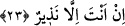

23. Sen sadece bir uyarıcısın.
“Sen sadece” ateş ve azapla “uyarıcısın;” işittirmek tabiî ki senin görevlerinden
değildir. Zaten kalpleri mühürlenmiş bu insanlara senin bir çıkar yol ve çare bulman da
mümkün değildir. Zira onlar ölüler mesabesindedir. Allah Teâlâ’nın “Şüphesiz Allah,
dilediğine işittirir.” (el-Fâtır 35/22) kavli ve yine “(Resûlüm!) Sen sevdiğini
hidâyete erdiremezsin; bilakis, Allah dilediğine hidayet verir ve hidayete girecek
olanları en iyi O bilir.” (el-Kasas 28/56) kavli ve “Bu işte senin yapacağın bir şey
yoktur.” (Âl-i İmran 3/128) ve daha başka âyetler, ulûhiyet ve nübüvvet kavramlarını
birbirinden temyîz ve tefrîk etmek içindir. Zira geçmiş bazı ümmetlerin ulûhiyet ve
nübüvvet konularında sapıttığı gibi bu ümmetin de şaşırıp Allah yolundan sapmaması
için bir uyarı ve hatırlatma mâhiyetindedir. Eski ümmetlerin bazıları (yahûdîler)
“Üzeyir Allah’ın oğludur,” diğer bazıları da (hıristiyanlar) “İsa Mesih, Allah’ın
oğludur,” dediler. İşte bu beyan, Allah’ın sonsuz rahmeti ve güzel tevfik ve
inâyetindendir.
Fakir (Bursevî) der ki: Peygamberimiz (s.a.) Bedir günü kâfirlerin cesetlerinin Bedir
kuyusuna atılmalarını emretti ve sonra onlara “Ey kâfirler! Ben Allah’ın bana vaad
ettiğini hak olarak buldum. Siz de Allah ve Rasûlü’nün size vaad ettiğini hak olarak
buldunuz mu?” diye nidâ ve hitap etti. Bunun üzerine Hz. Ömer (r.a.): “Ya Rasûlallah!
Sen bu cesedlerle nasıl konuşuyorsun?” diye sordu. Peygamber (s.a.): “Benim onlara
söylediğimi siz onlardan daha iyi duyamazsınız. Onlar pek iyi duyarlar; ancak cevap
vermeye muktedir değillerdir” buyurdu.[74] İşte bu haber, Peygamberimiz (s.a.)’in
Bedir kuyusuna atılmış olan ölü kâfirlere kendisini duyurduğunu göstermektedir. Yine
ölü defnedildikten sonra yapılan telkin ölüye duyurmak içindir. Yoksa bunun bir mânâsı
olmaz, denilirse, cevaben deriz ki:
Birincisi; muhtemeldir ki Allah Teâlâ o kuyuya atılmış olan müşrikleri o anda diriltti
onlara bir sitem, aşağılama, belâ ve hasret olsun diye peygamberin kelamını duyurdu.
Yoksa ölü, ölü olduğu sürece duyamaz. Yine Peygamberimiz (s.a.)’in “Siz onlardan
daha iyi duyamazsınız” sözü, perde yırtılıp açılarak zâil olduğu için bedensiz ruhların
beden ve cesedle beraber olan ruhlardan daha iyi duyduklarına delâlet eder.
İkincisi; yine Allah Teâlâ ölüyü dirilttikten sonra ona duyurur. Yâni ruh cesed ve
bedenle beraber dünyada olduğu gibi yoğun, şiddetli ve kuvvetli bir ilgi ve alaka kurar;
böylece işitir. İşte Peygamberimiz (s.a.) böyle işittirmiştir. Yine telkin yapan kimse de
Allah’ın işittirmesi ve kabre konulan kimsede hayat yaratmasıyla bu işi yapmaktadır.
Yoksa ölüde işitme hassası olmadığı gibi hiç kimsede de ölüye işittirme yetki ve
özelliği yoktur. En iyisini Allah bilir.
Bazı ârifler der ki: “Ey Muhammed (a.s.)! Ebû Cehil’e niçin gönlünü bağlıyorsun?
Onun çirkin tabîatı senin cevherinin nakşını kabûl edecek öze sâhip değildir.